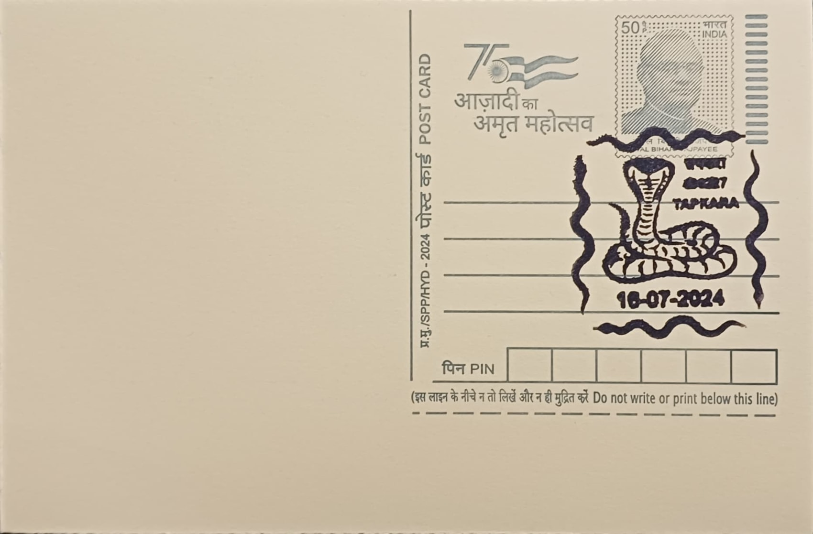

Snake
साँप


In regional folk etymology, Jashpur's Tapkara-Pharsabahar belt is popularly referred to as the "Naglok" or serpent realm, a name drawn from its unusually dense concentration of snake species across its reserved and protected forest patches such as Sarapjhariya, Bansajhal, Mirigkhol, and Sahilata. The tract lies in the eastern spur of Chhattisgarh where the state's boundaries meet Jharkhand, Odisha, and Madhya Pradesh, and the moniker reflects generations of local observation rather than any single founding legend, with villagers and foresters alike treating repeated sightings of cobras, kraits, and other species as evidence of the land's distinct ecological character.
Snakes occupy a dual identity in this setting, functioning simultaneously as objects of ecological study and as figures of religious veneration. Herpetological surveys conducted across Jashpur's blocks have recorded the Spectacled or Binocellate Cobra (Naja naja), the Common Indian Krait (Bungarus caeruleus), and the Banded Krait (Bungarus fasciatus) alongside numerous non-venomous species, underscoring the district's significance as a herpetofaunal hotspot within central India. This standing has drawn attention from zoological researchers and conservation bodies, since Jashpur's forest cover supports a reptile assemblage considerably richer than that of many surrounding plains districts, giving the cancellation's subject both a scientific and a cultural register.
Documented field surveys in the Tapkara and Pharsabahar blocks, carried out by herpetologists and published in zoological record journals, have specifically catalogued krait and cobra populations across named forest compartments, providing one of the more systematically recorded snake inventories for any block-level area in Chhattisgarh. The venomous species identified coexist with a larger number of harmless colubrids that prey on rodents and amphibians, a balance that local agricultural communities have long recognised informally, treating snakes near paddy fields as a natural check on crop pests rather than as pure hazards to be eliminated on sight.
A notable institutional response to this biodiversity has been the Government of Chhattisgarh's proposal to establish a Snake Rescue and Knowledge Centre at Tapkara, a plan that was placed before the Central Zoo Authority for consideration. The proposal followed recognition of the area's existing informal snake park, already known locally for housing cobras and kraits, and aimed to convert ad hoc rescue work into a structured facility combining public education with safe relocation of snakes found in human settlements, reflecting a shift from purely folk management of human-snake encounters toward formal conservation planning.
Within tribal and Hindu belief systems practised across Jashpur's substantial Adivasi population, the snake retains associations with Shiva, who is depicted wearing the serpent Vasuki as an ornament, as well as with fertility and guardianship motifs observed during festivals such as Nag Panchami. The proposed Tapkara centre, alongside ongoing wildlife department monitoring of the Naglok tract, has kept the area under periodic review by state forest officials even as the broader rescue-and-knowledge-centre plan remains in various stages of government processing rather than full operation.
| Date of Introduction | July 16, 2024 |
|---|---|
| Address | Sub Postmaster, |
| Tapkara SO, | |
| Jashpur (dt.), Chhattisgarh - 496227. |